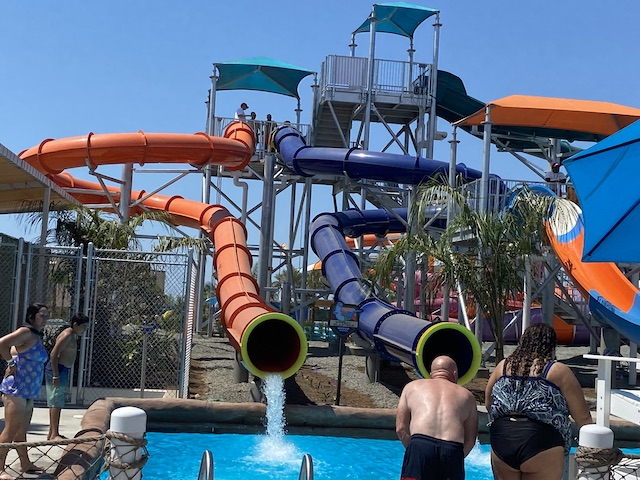

| |
Bombay Blasters Review

For this review, we're at New Wild Rivers, getting ready to check out their recreation of one of my favorite water slides from the original Wild Rivers. Bombay Blasters. Now it may not seem like it since....it looks VERY different. For one thing, I can see ALL of this slide. None of it is underground! Also, it's a plastic slide. Which removes some of the charm of the original slide. But if that slide was above ground, the original Bombay Blasters would look pretty similar to the new version. So let's get started. We hop in the slide and go around a turn. Pretty peaceful so far. However, we go down a small drop. But that drop gives us A LOT OF SPEED!!! If you close your eyes, it'll simulate the launch of the original Bombay Blasters. But it only works if you close your eyes. And then SPLASH!!!! It THROWS YOU INTO THE POOL!!! So I have a real soft spot for New Bombay Blasters. But....the original is better. So close, and yet so far. It's kind of like riding Space Mountain outdoors and wihtout the music. The rides still the same. But some of the effects of the original just made it better. Obviously, I still HIGHLY recommend riding this ride if at New Wild Rivers. Still a favorite of mine.
8/10
Location: New Wild Rivers
Opened: 2022
Built by: White Water Slides.
Last Ridden: September 3, 2022
Bombay Blasters Photos

Home
|